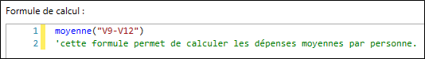
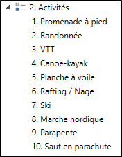
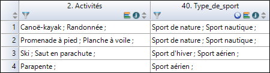
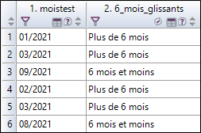
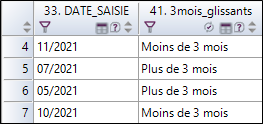

EXEMPLES DE CALCULS
Il est possible d'insérer un commentaire pour donner plus de précisions sur la formule de calcul utilisée. Après avoir inséré la formule de calcul, il suffit de rajouter une apostrophe "'"et renseigner votre commentaire.

'cette formule permet de calculer les dépenses moyennes par personne.Moyenne("V1;V3;V5-V7")tot = 0
nb = 0
Si Non V1.Estnonreponse Alors
tot = tot + 2 * V1
nb = nb + 2
FinSi
Si Non V2.Estnonreponse Alors
tot = tot + 5 * V2
nb = nb + 5
FinSi
Si Non V3.Estnonreponse Alors
tot = tot + 3 * V3
nb = nb + 3
FinSi
Si Non V4.Estnonreponse Alors
tot = tot + 3 * V4
nb = nb + 3
FinSi
Si Non V5.Estnonreponse Alors
tot = tot + 3 * V5
nb = nb + 3
FinSi
Si nb <> 0 Alors
V = tot / nb
FinSiCe script permet de calculer la moyenne pondérée de 3 notes en gérant les non-réponses à l'une des notes.
Si V1 = 1 Alors
V = 0
SinonSi V1 = 2 Alors
V = 5
SinonSi V1 = 3 Alors
V = 10
SinonSi V1 = 4 Alors
V = 20
FinSiRemplacer V1 pour la variable échelle de votre choix
n = 0
Si V1.EstNonreponse Alors
n = n + 1
FinSi
Si V2.EstNonreponse Alors
n = n + 1
FinSi
Si V3.EstNonreponse Alors
n = n + 1
FinSi
Si V4.EstNonreponse Alors
n = n + 1
FinSi
Si V5.EstNonreponse Alors
n = n + 1
FinSi
V = n(V1 - V1.Moyenne) / V1.EcartTypeSi V1 Comme "Autre" Alors
V = V2
Sinon
V = V1
FinSiSi V1.EstNonRéponse Alors
V1 = V1.Moyenne
FinSiSi V1.EstNonRéponse Alors
V1 = V1.Mode
FinSiSousChaîne(V1,0,DansChaîne(V1,",") - 1)TexteApres = V1
Caractere = "p"
NombreDeFois = 0
indice = 1
ResultatSouhaite = 3
Faire TantQue indice <> 0
indice = DansChaîne(TexteApres,Caractere)
Si indice > 0 Alors
NombreDeFois = NombreDeFois + 1
TexteApres = SousChaîne(TexteApres,indice)
FinSi
Boucle
Selon Cas ResultatSouhaite
Cas 1
V = NombreDeFois
Cas 2
V = TexteApres
Cas 3
V = NumChaîne(NombreDeFois) & " : " & TexteApres
FinSelonPour utiliser ce script, remplacer le caractère souhaité dans la ligne Caractere = "p". On peut utiliser Caractere=Car(13) pour compter les passages à la ligne
ValAléatoire(0, 50)Age(V1,V2,"mm,m")V1 est la date de naissance, V2 est la date de visite. Le résultat est donné ici en mois décimaux, on écrira "aa,a" ou "aa" ou "mm" ou "mm,m" pour d'autres formats
nb = 0
Si V1 > 0 Alors
nb = nb + 1
T(nb) = V1.Nombre
N(nb) = V1.Libellé
FinSi
Si V2 > 0 Alors
nb = nb + 1
T(nb) = V2.Nombre
N(nb) = V2.Libellé
FinSi
Si V3 > 0 Alors
nb = nb + 1
T(nb) = V3.Nombre
N(nb) = V3.Libellé
FinSi
Si V4 > 0 Alors
nb = nb + 1
T(nb) = V4 .Nombre
N(nb) = V4 .Libellé
FinSi
Si V5 > 0 Alors
nb = nb + 1
T(nb) = V5.Nombre
N(nb) = V5.Libellé
FinSi
permut = Vrai
Faire TantQue permut = Vrai
permut = Faux
Pour cpt = 1 à nb - 1
Si T(cpt) < T(cpt + 1) Alors
permut = Vrai
tmp = T(cpt)
T(cpt) = T(cpt + 1)
T(cpt + 1) = tmp
tmpch = N(cpt)
N(cpt) = N(cpt + 1)
N(cpt + 1) = tmpch
FinSi
Suivant cpt
Boucle
ch = ""
Pour cpt = 1 à nb
ch = ch & N(cpt) & ";"
Suivant cpt
V = chOn pourra ainsi retrouver le point le plus performant et le point le moins performant. Valider ce modèle puis changer les numéros des variables.
nb = V1
vheures = nb \ 3600
vminutes = (nb - vheures * 3600) \ 60
vsecondes = nb - vheures * 3600 - vminutes * 60
Si vheures <> 0 Alors
chheures = NumChaîne(vheures) & "h "
Sinon
chheures = ""
FinSi
Si vminutes <> 0 Alors
chminutes = NumChaîne(vminutes) & "mn "
Sinon
chminutes = ""
FinSi
Si vsecondes <> 0 Alors
chsecondes = NumChaîne(vsecondes) & "s "
Sinon
chsecondes = ""
FinSi
V = chheures & chminutes & chsecondesentreparentheses = Remplacer(v1,"\([^\)]*\)","¤")
entrecrochets = Remplacer(v1,"\[[^\]]*\]","¤")
entrebalises = Remplacer(v1,"<[^>]*>","¤")
V = entrebalisesSupprimer les lignes inutiles du script et remplacer V1 par la variable de votre choix.
Si NbrCar(V1) = 4 Alors
V ="0" & V1
Sinon
V = V1
FinSich=V1 - 5/24La date de saisie étant la date du serveur, on veut rectifier pour adapter les heures à celle du pays où a eu lieu l'enquête. On ajoute (soustrait) une portion de jour par exemple -5/24 pour le brésil, +11/24 pour l'ouest de l'Australie
ch = Remplacer(V1," ; ","_")
V = chDans notre exemple, nous aimerions obtenir les différents types de sports pratiqués (catégories) par les personnes à partir des activités sélectionnées dans la question Activités.



vtemp= ""
si v2 parmi ("1;2;3") alors
vtemp=vtemp & ";" & "Sport de nature"
finsi
si v2 parmi ("4;5;6") alors
vtemp=vtemp & ";" & "Sport nautique"
finsi
si v2 parmi ("7;8") alors
vtemp=vtemp & ";" & "Sport d'hiver"
finsi
si v2 parmi ("9;10") alors
vtemp=vtemp & ";" & "Sport aérien"
finsi
v=vtempDans notre exemple, nous aimerions obtenir les différents types de sports pratiqués (catégories) à partir des réponses aux questions Randonne, Canoe-kayak et Ski.

Si Randonnee parmi "Oui" alors
Vtemp= "Sport de nature"
sinon
Vtemp=""
Finsi
Si [Canoe-kayak] parmi "Oui" alors
Vtemp2= "Sport nautique"
sinon
Vtemp2=""
Finsi
Si Ski parmi "Oui" alors
Vtemp3= "Sport d'hiver"
sinon
Vtemp3=""
Finsi
V= Vtemp & ";" & Vtemp2 & ";" & Vtemp3
vtemp=""
Si Maximum("France;Espagne;Italie")=France alors
vtemp=vtemp & ";" & "France"
finsi
Si Maximum("France;Espagne;Italie")=Espagne alors
vtemp=vtemp & ";" & "Espagne"
finsi
Si Maximum("France;Espagne;Italie")=Italie alors
vtemp=vtemp & ";" & "Italie"
finsi
v=vtemp
Effectif de la marque BMW pour les hommes.
[Marque.effectif("BMW","sexe=\"1\"")]Effectif de la marque BMW pour les hommes utilisant du carburant gazole.
[Marque.effectif("BMW","sexe=\"1\" et carburant=\"gazole\"")]Effectif de la marque BMW pour les hommes utilisant n'importe quel type de carburant (non-réponses ignorées).
[Marque.effectif("BMW","sexe=\"1\" et carburant parmi \"1;2;3;4;5\"")]Les antislashs avant les numéros de modalités permettent de spécifier que vous indiquez un numéro de modalité et pas un libellé (utile notamment lorsque vos libellés de modalités sont des nombres comme dans le cas d'une note entre 0 et 10 par exemple).
Pour filtrer sur plusieurs modalités il faut utiliser le mot-clé parmi suivi de la liste des modalités séparées par des points-virgules et placées entre doubles guillemets.
Lorsqu'on veut passer un profil à une fonction comme Pourcentage, il faut passer le profil entre double guillemets, donc si on a besoin d'utiliser des doubles guillemets dans l'expression qui définit le profil, il faut les "échapper", le caractère d'échappement est l'antislash (\).
6 mois glissants

Si Age(moistest,"mm")<=6 alors
v="6 mois et moins"
sinon
v="Plus de 6 mois"
finsi
3 mois glissants (en fonction de la variable date de saisie)

Si annee(maintenant)=annee(date_saisie) et ((mois(maintenant)-mois(date_saisie))<=3) alors
v="Moins de 3 mois"
sinonsi annee(maintenant)-annee(date_saisie)=1 et ((mois(Maintenant)+12-mois(date_saisie))<=3) alors
v="Moins de 3 mois"
sinon
v="Plus de 3 mois"
finsiv=Remplacer(Commentaire,"\r\n", " ")temp = ""
Pour i = 1 à 5
alea = ValAleatoire(1,10) & ";"
Faire TantQue temp Contient alea
alea = ValAleatoire(1,10) & ";"
Boucle
temp=temp & alea
Suivant i
V=tempDans cet exemple, nous souhaitons afficher le chiffre d'affaires de l'année 2019 à partir des variables CA et Annee en entrant la formule de calcul suivante directement depuis une vue d'analyse.
[CA.somme("[Annee] parmi\"2019\"")]
Soit 7 variables numérique (V1 => V7).
Nous souhaitons compter le nombre de 0.

Formule 1 :
vtemp=0
v_val(1)=v1
v_val(2)=v2
v_val(3)=v3
v_val(4)=v4
v_val(5)=v5
v_val(6)=v6
v_val(7)=v7
Pour i = 1 à 7
si v_val(i)=0 alors
vtemp=vtemp+1
finsi
Suivant
v=vtempFormule 2 :
vtemp=0
Pour i = 1 à 7
si eval("v" & i)=0 alors
vtemp=vtemp+1
finsi
Suivant
v=vtemp[NombreObservations("date_arrivee>\"31/07/2020\"")]vtemp(1)=2
vtemp(2)=5
vtemp(3)=7
vtemp(4)=10
alea=ValAleatoire(1,4)
v=eval("vtemp(" & alea & ")")
Vtemp=Durée([date_entree],[date_sortie])
V=FormatDurée(Vtemp,"j","m\m\ s\s")
NombreObservations("Activites parmi \"Farniente;Baignade;Loisirs\"")
NombreObservations("Activites parmi \"1;2;3\"")v=NombreObservations("v1 parmi \"" & v1.chaine & "\"")*v1 à remplacer par le numéro de la variable à utiliser dans votre enquête.